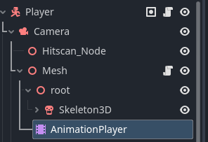
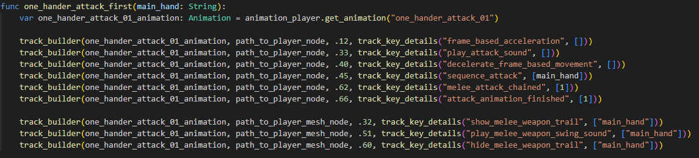

Godot 3.5-4+: Animation Track Loader
Jan 09 2024
Setup
This is my initial player structure that will be referenced in the setup process. The root node Player
has a script attached called Player.gd and the following code will be within this script.

My example is from an FPS game I am building. The example can be interchanged to mold into any game that has
a similar player node structure. Past the example I explain a number of key take-aways and details.
@onready var animation_player: AnimationPlayer = mesh.get_node("AnimationPlayer")
var path_to_player_node: NodePath = ""
func _ready():
var animation_player_root_node = animation_player.get_parent()
path_to_player_node = animation_player_root_node.get_path_to(self)
func setup_pistol_track_events():
const WIELD_PISTOL_FIRE = "Wield_Pistol_Fire"
const WIELD_PISTOL_RELOAD = "Wield_Pistol_Reload"
var wield_pistol_fire: Animation = animation_player.get_animation(WIELD_PISTOL_FIRE)
var wield_pistol_reload: Animation = animation_player.get_animation(WIELD_PISTOL_RELOAD)
track_builder(wield_pistol_fire, path_to_player_node, wield_pistol_fire.length, track_key_details("ready_to_fire", []))
track_builder(wield_pistol_reload, path_to_player_node, wield_pistol_reload.length, track_key_details("reload_revolver", []))
func track_key_details(animation_name: String, animation_arguments):
return { "method": animation_name, "args": animation_arguments, }
func track_builder(animation: Animation, path_to_node: NodePath, timestamp: float, track_details):
var animation_track = animation.add_track(Animation.TYPE_METHOD)
animation.track_set_path(animation_track, path_to_node)
animation.track_insert_key(animation_track, timestamp, track_details)
If your method call has parameters you want to pass values into see below.
function ready_to_fire(is_ready: bool):
...
# Usage: track_builder(wield_pistol_fire, path_to_player_node, wield_pistol_fire.length, track_key_details("ready_to_fire", [true]))
Another use case is what happens if you have a method you want to call that is not on the root node? Keep in mind, all that the path_to_node means
is where is the source to the method I wish to append to this track.
In a different project I abstracted the track builder methods into their own Script. Here I have two sources where I need to call methods from.
# Example is from Godot 3.5+
var animation_player: AnimationPlayer = null
var player_node: Character = null
var player_mesh_node: Spatial = null
var path_to_player_node: NodePath = ""
var path_to_player_mesh_node: NodePath = ""
# init called from Player.gd or a ready function of a parent node
func init(animationPlayer: AnimationPlayer, playerNode: Character, playerMeshNode: Spatial):
animation_player = animationPlayer
player_node = playerNode
player_mesh_node = playerMeshNode
set_node_paths()
one_hander_attack_setup()
duel_wield_attack_setup()
func set_node_paths():
var animation_player_root_node = animation_player.get_parent()
path_to_player_node = animation_player_root_node.get_path_to(player_node)
path_to_player_mesh_node = animation_player_root_node.get_path_to(player_mesh_node)
Usage:

Key Takeaways
The main use case is to bypass the manual approach of adding the method call tracks yourself. This proves to be tedious, especially for rapid animation prototyping.
My animation workflow is done through Blender using Auto Rig Pro as the export process. To manually export the animations yourself on a rig. This video
covers it well.
To better understand how to add tracks to an animation player. You can visit the latest documentation for Godot on the topic here.